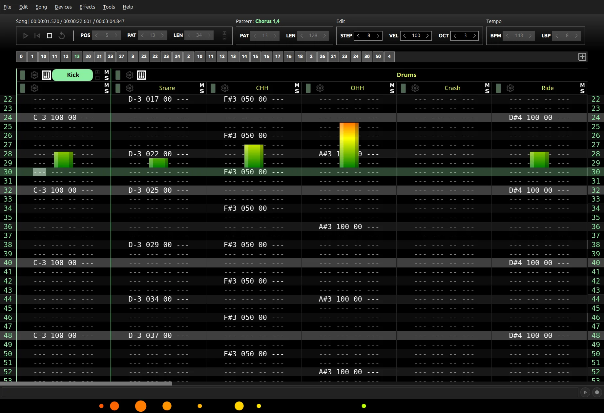
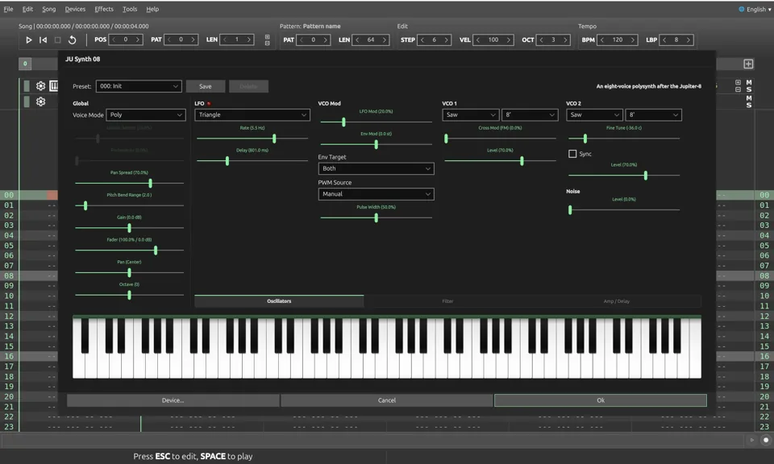
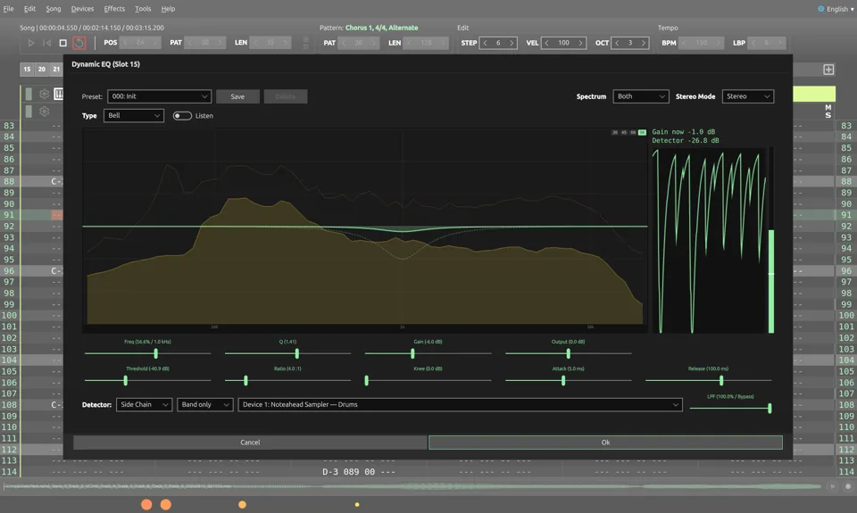
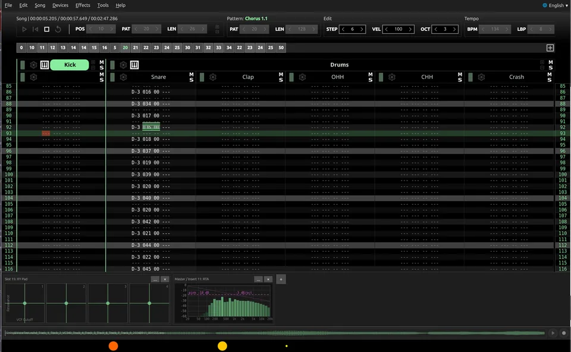

Free & open source · GPLv3 · Linux
A MIDI tracker and a complete music studio.
Fast, keyboard-driven tracker editing with the whole song in front of you — and a complete studio behind it. Point it outwards instead and it drives a room full of MIDI hardware with the same precision.

21internal instruments
48effects & analyzers
10languages
100%free, forever
Made with Noteahead
Produced, mixed and mastered entirely in Noteahead by Arctic Music Project.
Incredible Times (2026 Version)
Halla
Endless
Everything in one place

Instruments
- 21 internal instruments in a Virtual Device Rack
- Virtual analog with a VPM engine, wavetable, four-operator FM and acid bass synths
- JU Synth and JU Synth 08, after the Juno-60 and the Jupiter-8
- Three drum machines, a physically modelled snare and an 808 kick
- Three physically modelled pianos, voiced against a real CP-80
- Four string machines, after the VP-330/VC340 and the Solina
- A 16-pad sampler with recording, a speech synth and Noise FX

Mixing & effects
- 48 rack effects and analyzers, on the master, inserts and sends
- Mixer view with channel strips, IN/OUT meters and clip LEDs
- Parametric, 32-band graphical, dynamic and vintage EQs
- Reverb 224 after the Lexicon 224, plus reverbs, ambience and early reflections
- Compression, an LA-2A-style optical leveler, gate, limiter, transient shaping, saturation and fuzz
- LUFS, true-peak, RTA and phase scope metering, reference monitoring
- Offline renderer to WAV or FLAC, master mix or per-track stems

Modulation & performance
- XY Pad device: four hand-played pads, each axis moving any device or effect parameter
- LFO device: four LFOs on any parameter, free, tempo-synced or one-shot
- LFOs and pads on the same parameter add up
- Performance Panel under the editor: XY pads, RTAs, LUFS, dBTP and stereo field meters
- Pad moves recorded while playing land in the song as automation curves
Sequencing & MIDI
- Sample-accurate, drift-free internal timing
- Keyboard-driven tracker editing in decimal values (0-127)
- Automate any device or effect parameter, or draw the curve node by node
- Arpeggiator, chords, step recording and live play
- MIDI hot-plug, per-track port and channel, SMF Type 1 export
- ALSA, PulseAudio and JACK with optional transport sync
- Translated into ten languages; saves to an open XML-based .nahd format
- Will always be 100% FREE
Screenshots
Download
Debian package
For Ubuntu 24.04 LTS and 26.04 LTS. Uses the stock Qt 6 from the repositories.
sudo apt install ./noteahead-*.deb
AppImage
For other distributions. Carries its own Qt; needs glibc 2.38 or newer (Debian 13, Fedora 39 and later).
chmod +x Noteahead-*.AppImage
Source
C++, Qt 6 and QML, licensed under GPLv3. Build instructions are in the README.
git clone https://github.com/juzzlin/Noteahead